Sistem Arkib Digital (DMS) PKINK ialah sistem berasaskan web untuk mendigitalkan, mengarkib dan meluluskan dokumen serta borang PKINK. Sistem ini membolehkan:
borang diisi secara digital atau diimbas daripada borang kertas, dengan medan diisi secara automatik oleh pengecaman teks (OCR) dan kecerdasan buatan (AI);
permohonan disokong dan diluluskan secara dalam talian, lengkap dengan slip kelulusan berkod QR;
dokumen lama diarkib secara digital dan dicari mengikut kandungannya;
setiap tindakan direkodkan dalam log audit.
Semua pemprosesan OCR dan AI berlaku dalam pelayan PKINK. Tiada dokumen dihantar kepada perkhidmatan luar.
1.2 Peranan pengguna
Capaian setiap pengguna ditentukan oleh peranannya. Seorang pengguna boleh memegang lebih daripada satu peranan.
Peranan
Fungsi utama
Bab
Kakitangan (STAFF)
Mengisi borang secara digital atau melalui imbasan, menghantar permohonan dan menyemak status dokumen sendiri
3
Kerani Arkib (KERANI)
Memuat naik dokumen, mengarkib dokumen fizikal melalui Imbas & Arkib, mencari dan mengeksport senarai
4
Pegawai Penyokong (PENYOKONG)
Menyokong atau menolak permohonan (peringkat pertama)
5
Pegawai Pelulus (PELULUS)
Meluluskan atau menolak permohonan (peringkat akhir)
5
Pengurus Bahagian (PENGURUS)
Memantau dan mengurus dokumen bahagian sendiri
6
Juruaudit (AUDIT)
Menyemak log audit dan sejarah log masuk (baca sahaja)
7
Pentadbir Sistem (ADMIN)
Mengurus kakitangan, bahagian, kategori dokumen, templat borang dan tetapan keselamatan
8
Super Admin (SUPERADMIN)
Semua fungsi pentadbir, termasuk menetapkan peranan pengguna
8
1.3 Keperluan
Pelayar web terkini: Google Chrome, Microsoft Edge, Mozilla Firefox atau Safari.
Alamat sistem yang diberikan oleh Bahagian Digital PKINK.
Akaun pengguna (No. Kad Pengenalan dan kata laluan).
Bagi Pentadbir Sistem dan Super Admin: aplikasi pengesah pada telefon pintar (Google Authenticator atau Microsoft Authenticator).
2. Akses Sistem
2.1 Log masuk
Buka alamat sistem dalam pelayar web.
Masukkan No. Kad Pengenalan (12 digit tanpa sengkang) dan Kata Laluan.
Klik Log Masuk.
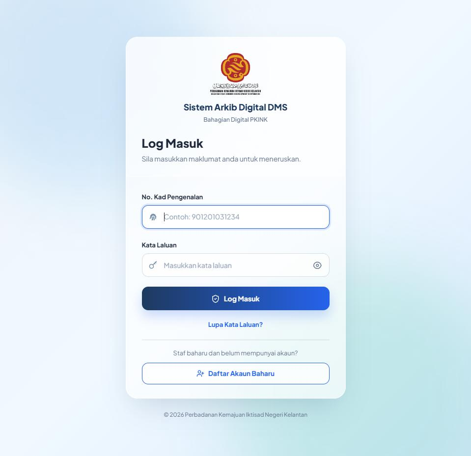
Rajah 2.1: Halaman log masuk
Untuk keselamatan, akaun disekat sementara selepas beberapa cubaan log masuk yang gagal.
2.2 Log masuk kali pertama: tukar kata laluan sementara
Akaun baharu diberikan kata laluan sementara. Pada log masuk pertama, sistem memaparkan halaman Tukar Kata Laluan dan halaman lain tidak boleh dibuka sehingga kata laluan ditukar.
Masukkan kata laluan baharu: sekurang-kurangnya 8 aksara, mengandungi huruf dan nombor, dan berbeza daripada kata laluan sementara.
Masukkan semula kata laluan baharu dalam ruangan pengesahan.
Klik Simpan Kata Laluan Baharu.
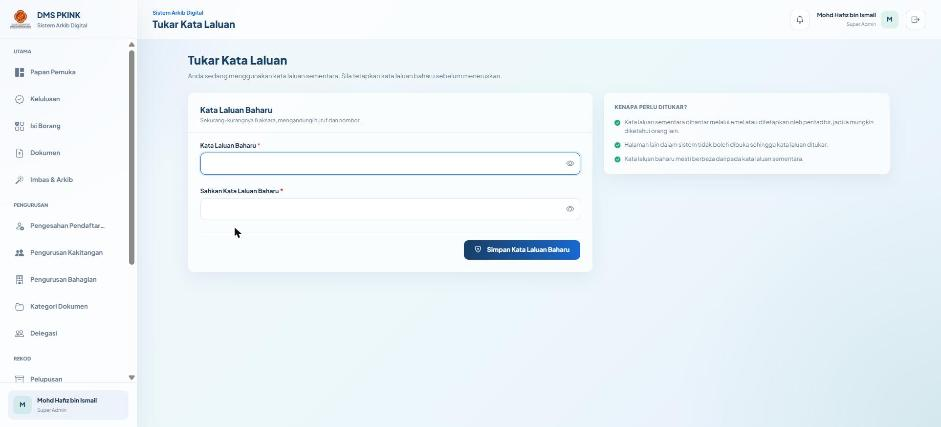
Rajah 2.2: Tukar kata laluan sementara
2.3 Pengesahan dua faktor (2FA)
Pengesahan dua faktor menambah lapisan keselamatan: selain kata laluan, pengguna memasukkan kod 6 digit daripada aplikasi pengesah pada telefon. Pendaftaran 2FA adalah wajib bagi Pentadbir Sistem dan Super Admin, dan pilihan bagi pengguna lain (melalui halaman Profil Saya).
Mendaftar 2FA:
Pasang Google Authenticator atau Microsoft Authenticator pada telefon.
Dalam sistem, buka Profil Saya → Pengesahan Dua Faktor (2FA) dan klik Hidupkan 2FA. (Bagi pentadbir, halaman ini dipaparkan secara automatik selepas log masuk pertama.)
Dalam aplikasi pengesah, pilih tambah akaun dan imbas kod QR yang dipaparkan.
Masukkan kod 6 digit daripada aplikasi, kemudian klik Sahkan & Aktifkan.
Sistem memaparkan 8 kod pemulihan. Simpan kod ini di tempat selamat: setiap kod boleh digunakan sekali jika telefon hilang. Kod ini tidak akan dipaparkan lagi.
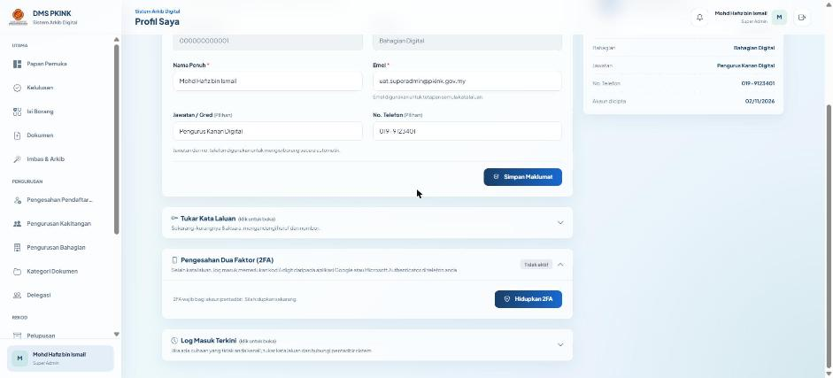
Rajah 2.3: Notis 2FA wajib bagi pentadbir
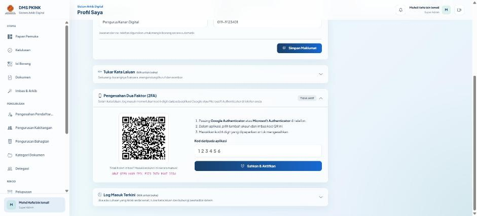
Rajah 2.4: Kod QR untuk diimbas oleh aplikasi pengesah
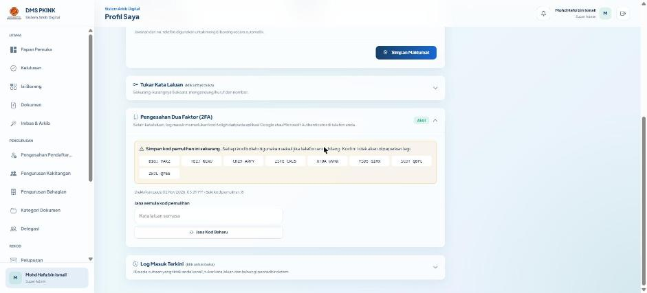
Rajah 2.5: Kod pemulihan selepas 2FA diaktifkan
Log masuk dengan 2FA: selepas kata laluan disahkan, masukkan kod 6 digit semasa daripada aplikasi pengesah dan klik Sahkan & Log Masuk. Jika telefon tiada, masukkan salah satu kod pemulihan.
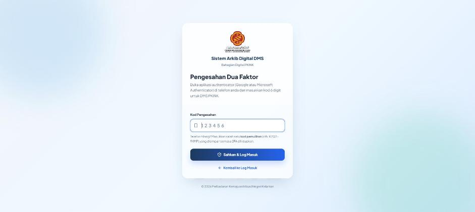
Rajah 2.6: Halaman kod pengesahan semasa log masuk
2.4 Lupa kata laluan
Di halaman log masuk, klik Lupa Kata Laluan?
Masukkan alamat emel yang berdaftar dan hantar permohonan.
Buka emel daripada sistem dan klik pautan tetapan semula (pautan mempunyai tempoh sah).
Tetapkan kata laluan baharu mengikut polisi kata laluan.
Atas sebab keselamatan, sistem memaparkan mesej yang sama sama ada emel itu berdaftar atau tidak. Jangan kongsi pautan tetapan semula dengan sesiapa.
2.5 Mendaftar akaun baharu
Kakitangan yang belum mempunyai akaun boleh memohon melalui halaman log masuk:
Klik Daftar Akaun Baharu.
Isi No. Kad Pengenalan, nama penuh, emel rasmi dan bahagian.
Klik Hantar Permohonan. Permohonan akan disemak oleh pentadbir sistem.
Jika diluluskan, kata laluan sementara dihantar melalui emel. Log masuk dan tukar kata laluan (2.2).
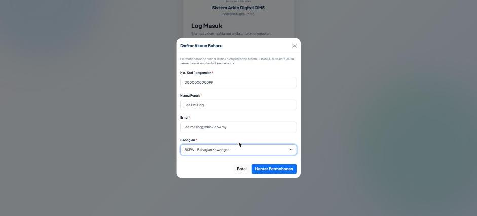
Rajah 2.7: Borang Daftar Akaun Baharu
2.6 Antara muka utama
Menu sisi (kiri): menu dipaparkan mengikut peranan pengguna.
Papan Pemuka: ringkasan kerja mengikut peranan, contohnya permohonan sendiri, giliran kelulusan atau aktiviti sistem.
Loceng notifikasi (atas kanan): memaparkan notifikasi yang belum dibaca dan notifikasi dalam tempoh 24 jam, serta bilangan perkara yang menunggu tindakan. Klik notifikasi untuk membuka dokumen berkaitan. Pautan Lihat semua notifikasi memaparkan sejarah penuh.
Notifikasi peranti: dalam menu loceng, klik Hidupkan untuk menerima notifikasi pada komputer atau telefon walaupun tab sistem ditutup.
Nama pengguna (atas kanan): membuka Profil Saya (nama, emel, jawatan, no. telefon, tukar kata laluan, 2FA dan log masuk terkini). Pengguna yang memegang lebih daripada satu peranan boleh menukar peranan aktif melalui menu ini.
Log keluar: ikon di sudut atas kanan. Sentiasa log keluar selepas selesai, terutamanya pada komputer yang dikongsi.
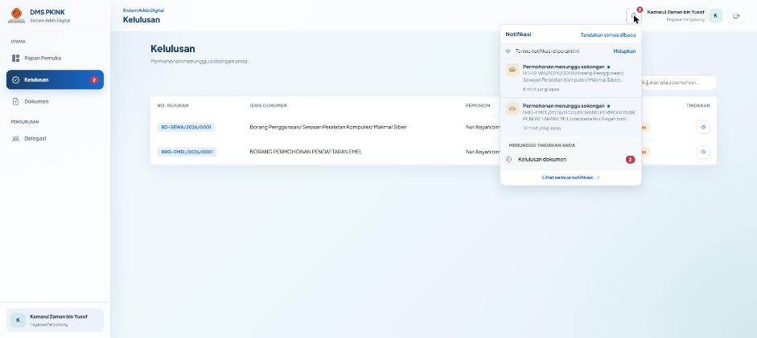
Rajah 2.8: Menu loceng notifikasi
3. Kakitangan: Mengisi dan Menghantar Borang
3.1 Halaman Isi Borang
Menu Isi Borang menyenaraikan semua borang mengikut kumpulan. Setiap kad borang menunjukkan bilangan medan dan bilangan medan yang diisi secara automatik daripada profil. Terdapat dua cara mengisi borang:
Isi Digital: mengisi borang terus dalam sistem.
Imbas & Hantar: memuat naik borang kertas yang telah diisi; sistem membaca dan mengisi medan secara automatik untuk disemak.
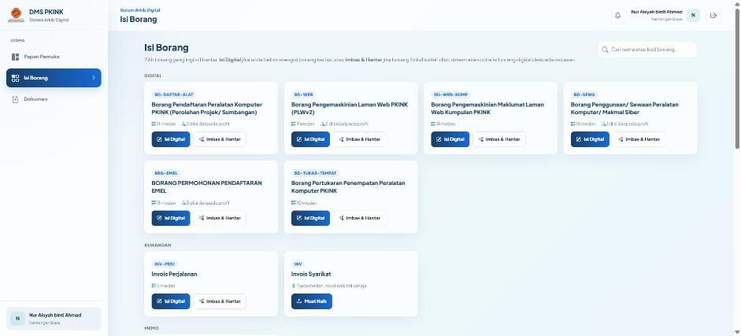
Rajah 3.1: Halaman Isi Borang
3.2 Isi Digital
Pada kad borang, klik Isi Digital.
Semak Tarikh Dokumen dan isi Perkara (pilihan).
Isi setiap medan. Medan bertanda * wajib diisi. Medan berlabel DARIPADA PROFIL diisi secara automatik daripada profil anda dan tidak boleh diubah.
Bahagian bertanda Untuk kegunaan pejabat diisi oleh pegawai dan boleh dibiarkan kosong oleh pemohon.
Lampirkan fail imbasan jika perlu (pilihan; PDF, JPG atau PNG, maksimum 10MB setiap fail). Butang Kamera membolehkan gambar diambil terus daripada telefon.
Klik Simpan & Hantar untuk menghantar permohonan untuk kelulusan, atau Simpan untuk menyimpan tanpa menghantar.
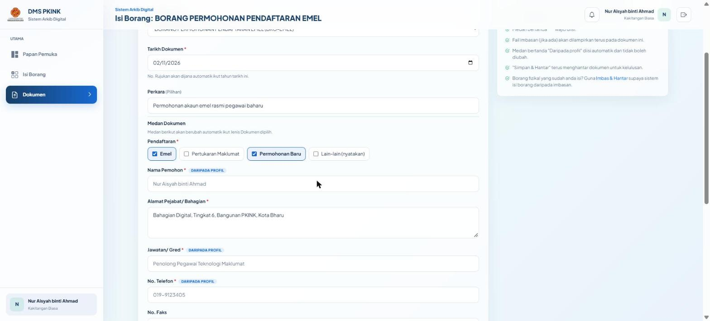
Rajah 3.2: Borang Isi Digital dengan medan daripada profil
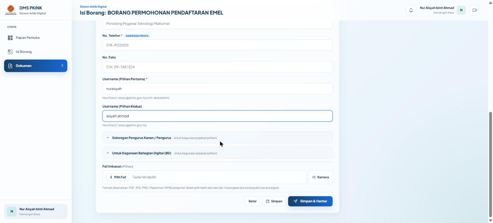
Rajah 3.3: Bahagian bawah borang: seksyen kegunaan pejabat, fail imbasan dan butang hantar
Selepas dihantar, sistem menjana No. Rujukan secara automatik (contohnya BRG-EMEL/2026/0001) dan status permohonan menjadi Dalam Proses.
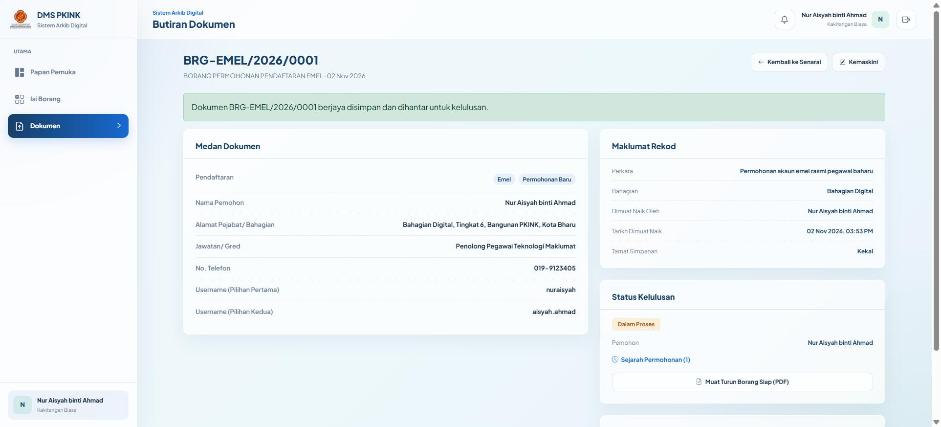
Rajah 3.4: Butiran dokumen selepas dihantar
3.3 Imbas & Hantar (borang kertas yang telah diisi)
Pada kad borang, klik Imbas & Hantar. Jenis dokumen dipilih secara automatik.
Klik Pilih Fail dan pilih imbasan borang (satu fail, PDF/JPG/PNG), atau gunakan Kamera.
Klik Analisis & Isi Automatik. Proses mengambil masa kira-kira 10 hingga 60 saat bergantung pada bilangan muka surat.
Pada skrin Semak & Sahkan, bandingkan setiap medan dengan pratonton imbasan di sebelah kanan. Medan berlabel DIISI AI diisi oleh sistem dan mesti disemak. Betulkan sebarang nilai yang salah.
Jika borang ditulis tangan dan banyak medan kosong atau salah, klik Baca semula (tulisan tangan) untuk bacaan dengan AI penglihatan.
Tandakan pengakuan Saya sahkan maklumat di atas sepadan dengan borang fizikal yang saya isi, kemudian klik Sahkan & Hantar.
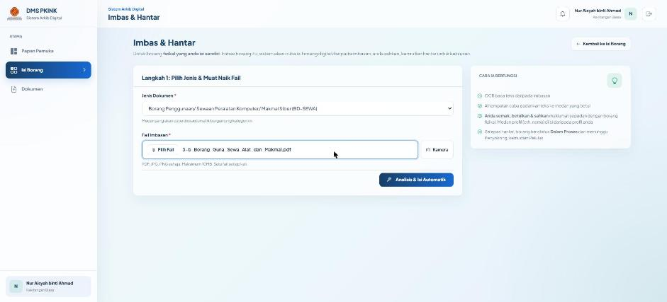
Rajah 3.5: Memilih fail imbasan
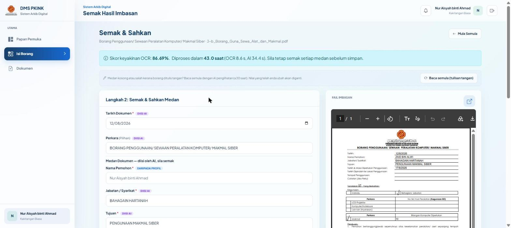
Rajah 3.6: Skrin Semak & Sahkan dengan pratonton imbasan
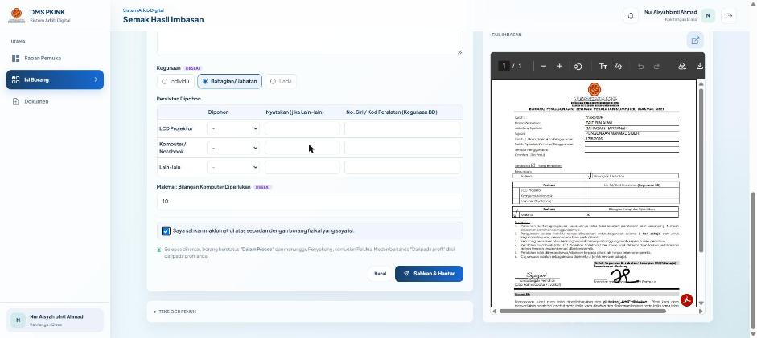
Rajah 3.7: Pengakuan pemohon dan butang Sahkan & Hantar
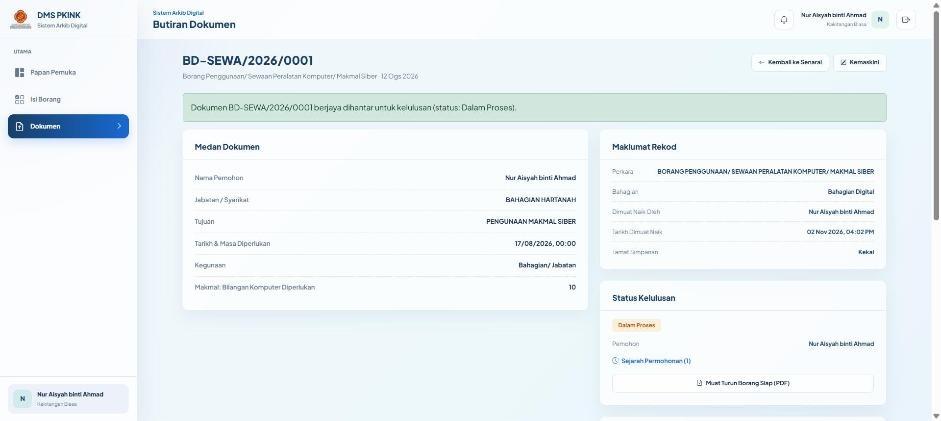
Rajah 3.8: Permohonan berjaya dihantar
Medan yang diisi daripada profil (contohnya nama pemohon) sentiasa menggunakan maklumat akaun anda, bukan bacaan imbasan.
3.4 Menyemak status permohonan
Menu Dokumen menyenaraikan dokumen anda beserta status: Belum Dihantar, Dalam Proses, Disokong, Diluluskan atau Ditolak.
Papan Pemuka memaparkan ringkasan permohonan anda.
Loceng notifikasi memaklumkan setiap perubahan status.
Pada halaman butiran dokumen, klik Sejarah Permohonan untuk melihat garis masa setiap tindakan beserta ulasan pegawai.
3.5 Permohonan ditolak
Jika permohonan ditolak, ulasan pegawai dipaparkan dalam panel Status Kelulusan. Klik Kemaskini untuk membetulkan maklumat, kemudian hantar semula untuk kelulusan.
3.6 Muat turun dokumen
Fail imbasan: butang muat turun menghasilkan salinan bertera air "SALINAN TERKAWAL PKINK" dengan nama pemuat turun dan tarikh. Fail asal tidak diubah.
Borang Siap (PDF): borang asal yang diisi dengan nilai dokumen dan cop status semasa (lihat 5.7).
Slip Kelulusan (PDF): tersedia selepas permohonan diluluskan (lihat 5.6).
4. Kerani Arkib: Muat Naik dan Imbas & Arkib
4.1 Muat naik dokumen
Menu Dokumen → Muat Naik Dokumen.
Pilih Jenis Dokumen. Medan berkaitan dipaparkan secara automatik.
Isi Tarikh Dokumen, Perkara dan medan dokumen.
Lampirkan fail imbasan (boleh lebih daripada satu fail).
Klik Simpan untuk mengarkib, atau Simpan & Hantar jika dokumen memerlukan kelulusan.
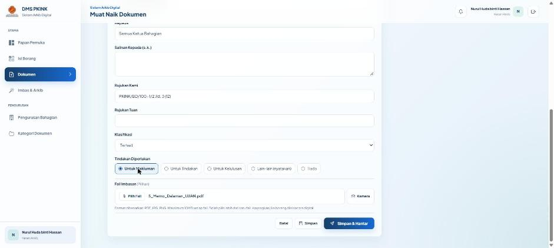
Rajah 4.1: Borang muat naik (contoh Memo Dalaman)
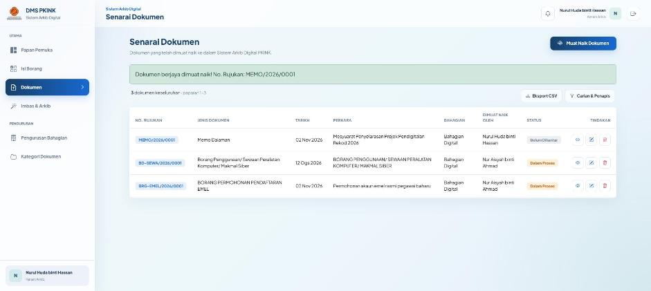
Rajah 4.2: Senarai dokumen selepas muat naik
4.2 Imbas & Arkib (dokumen fizikal sedia lulus)
Imbas & Arkib digunakan untuk mendigitalkan dokumen lama yang telah diluluskan secara fizikal. Dokumen yang disimpan melalui fungsi ini terus berstatus Diluluskan tanpa melalui aliran sokongan.
Menu Imbas & Arkib. Pilih Jenis Dokumen dan fail imbasan.
Klik Analisis & Isi Automatik dan tunggu sehingga analisis selesai.
Semak setiap medan berbanding imbasan. Sistem memaparkan skor keyakinan OCR dan menandakan muka surat yang dibaca dengan AI penglihatan (tulisan tangan); semak medan tersebut dengan lebih teliti.
Betulkan nilai yang salah, kemudian klik Sahkan & Simpan (Diluluskan).
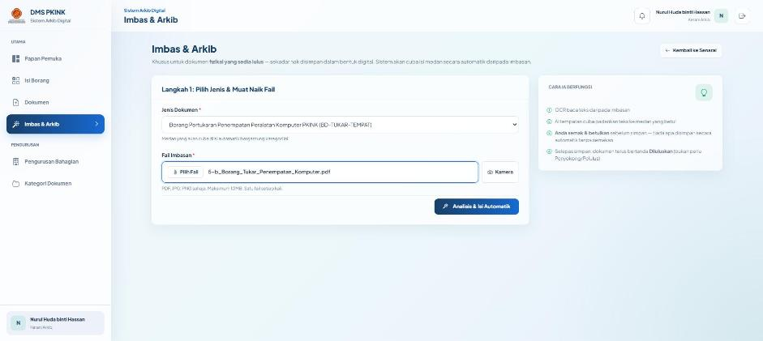
Rajah 4.3: Langkah 1: pilih jenis dan fail
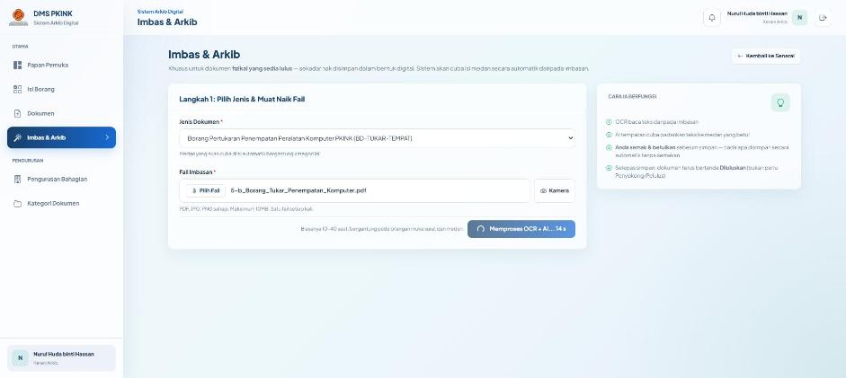
Rajah 4.4: Analisis OCR dan AI sedang berjalan
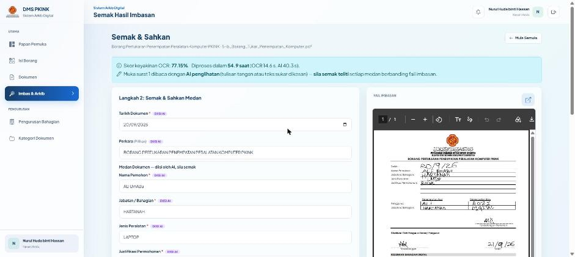
Rajah 4.5: Skrin semak bagi borang bertulisan tangan
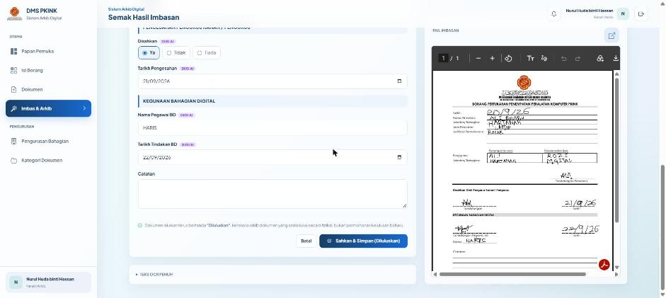
Rajah 4.6: Nilai yang telah dibetulkan dan butang simpan
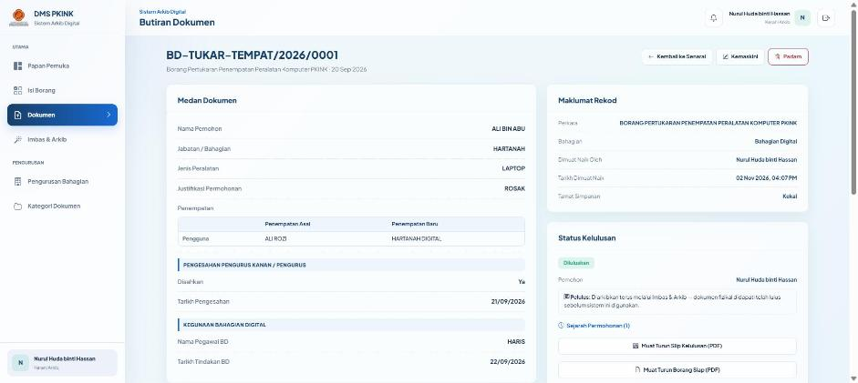
Rajah 4.7: Dokumen yang diarkib dengan status Diluluskan
Jika sistem mencadangkan kategori lain (kerana imbasan lebih sepadan dengan templat borang lain), semak semula Jenis Dokumen sebelum menyimpan.
4.3 Carian, penapis dan eksport
Klik Carian & Penapis pada halaman Senarai Dokumen.
Carian kata kunci merangkumi No. Rujukan, perkara, nilai medan, nama fail dan teks OCR imbasan.
Tapis mengikut Jenis Dokumen, Bahagian dan julat tarikh. Selepas Jenis Dokumen dipilih, Penapis medan membolehkan carian mengikut medan khusus (contohnya julat tarikh atau pilihan tertentu).
Klik Eksport CSV untuk memuat turun senarai yang ditapis (boleh dibuka dalam Microsoft Excel).
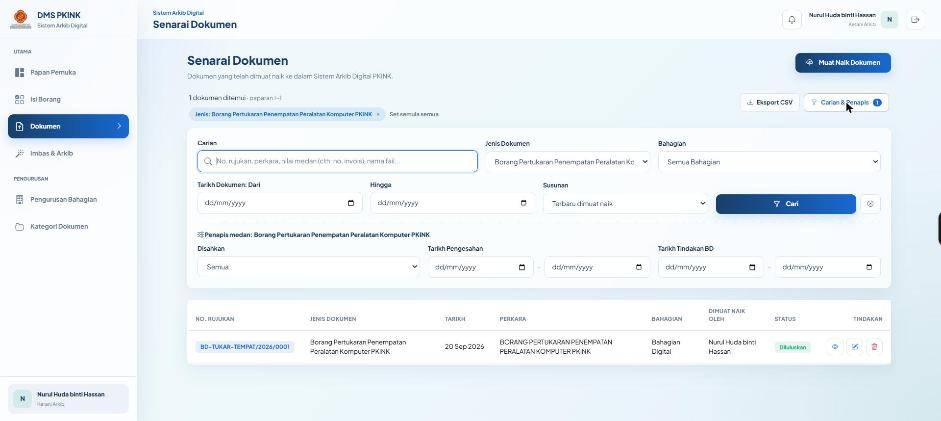
Rajah 4.8: Panel Carian & Penapis dengan penapis medan
4.4 Butiran dokumen
Pratonton fail imbasan dipaparkan dalam halaman.
Jalankan OCR membaca teks fail imbasan supaya kandungannya boleh dicari. Proses berjalan di latar dan status dikemas kini secara automatik.
Kemaskini untuk mengubah maklumat atau menambah fail; Padam mengalihkan dokumen ke Tong Sampah (rekod dan fail dikekalkan untuk arkib).
Permohonan boleh ditolak pada mana-mana peringkat; ulasan adalah wajib apabila menolak. Pegawai tidak boleh menyokong, meluluskan atau menolak permohonan sendiri. Pegawai Penyokong mengendalikan permohonan bahagian sendiri; Pegawai Pelulus mengendalikan semua bahagian.
5.2 Giliran tindakan
Papan Pemuka dan menu Kelulusan memaparkan permohonan yang menunggu tindakan anda, bermula dengan yang paling lama. Notifikasi baharu turut dipaparkan pada loceng dan sebagai pemberitahuan dalam halaman.
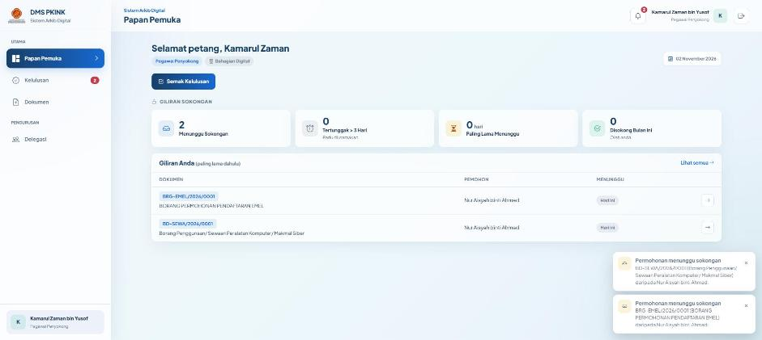
Rajah 5.1: Papan pemuka Pegawai Penyokong
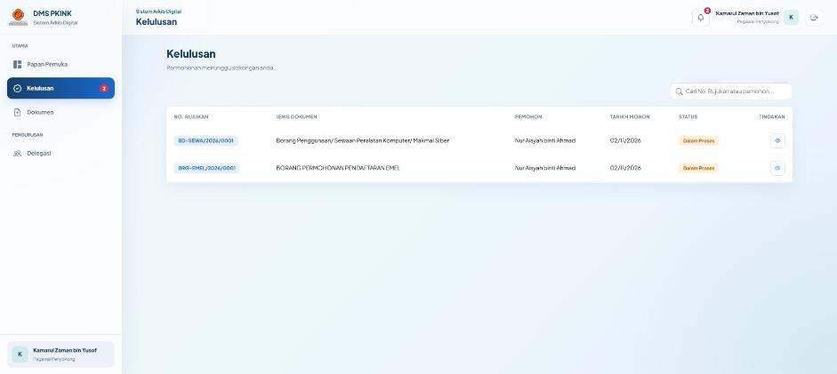
Rajah 5.2: Senarai Kelulusan
5.3 Menyokong permohonan
Buka permohonan daripada senarai Kelulusan.
Semak medan dokumen dan fail imbasan.
Isi Ulasan (pilihan) dan klik Sokong.
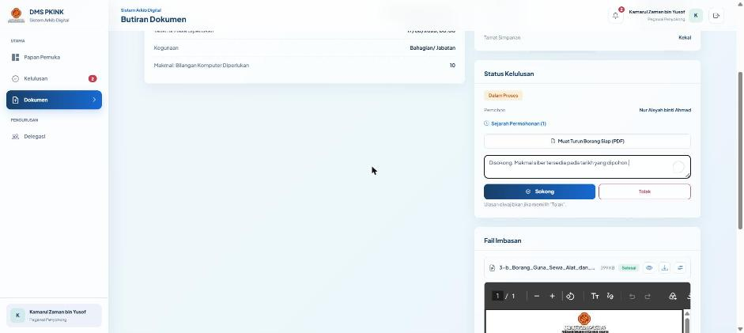
Rajah 5.3: Panel Status Kelulusan bagi Pegawai Penyokong
5.4 Meluluskan permohonan
Buka permohonan berstatus Disokong.
Klik Sejarah Permohonan untuk melihat ulasan Pegawai Penyokong.
Isi Ulasan (pilihan) dan klik Luluskan.
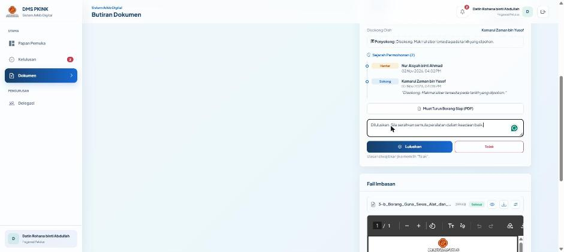
Rajah 5.4: Sejarah permohonan dan butang Luluskan
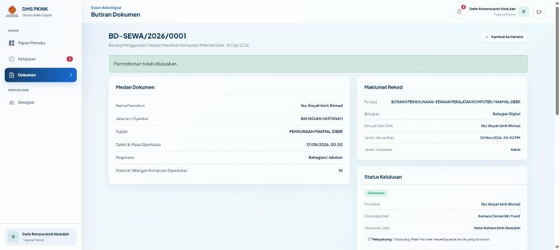
Rajah 5.5: Permohonan telah diluluskan
5.5 Menolak permohonan
Isi Ulasan yang menerangkan sebab penolakan (wajib), kemudian klik Tolak. Pemohon dimaklumkan dan boleh membetulkan serta menghantar semula permohonan.
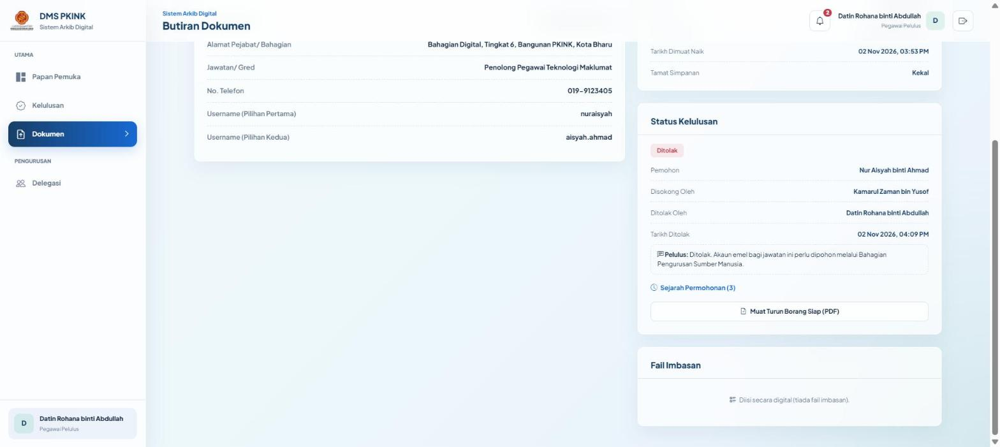
Rajah 5.6: Permohonan yang ditolak beserta ulasan pelulus
5.6 Slip kelulusan dan pengesahan QR
Bagi permohonan yang diluluskan, klik Muat Turun Slip Kelulusan (PDF) pada halaman butiran dokumen. Slip mengandungi maklumat permohonan, pegawai yang terlibat dan kod QR pengesahan. Sesiapa yang mengimbas kod QR akan melihat halaman Slip Sah yang mengesahkan status semasa permohonan dalam sistem.
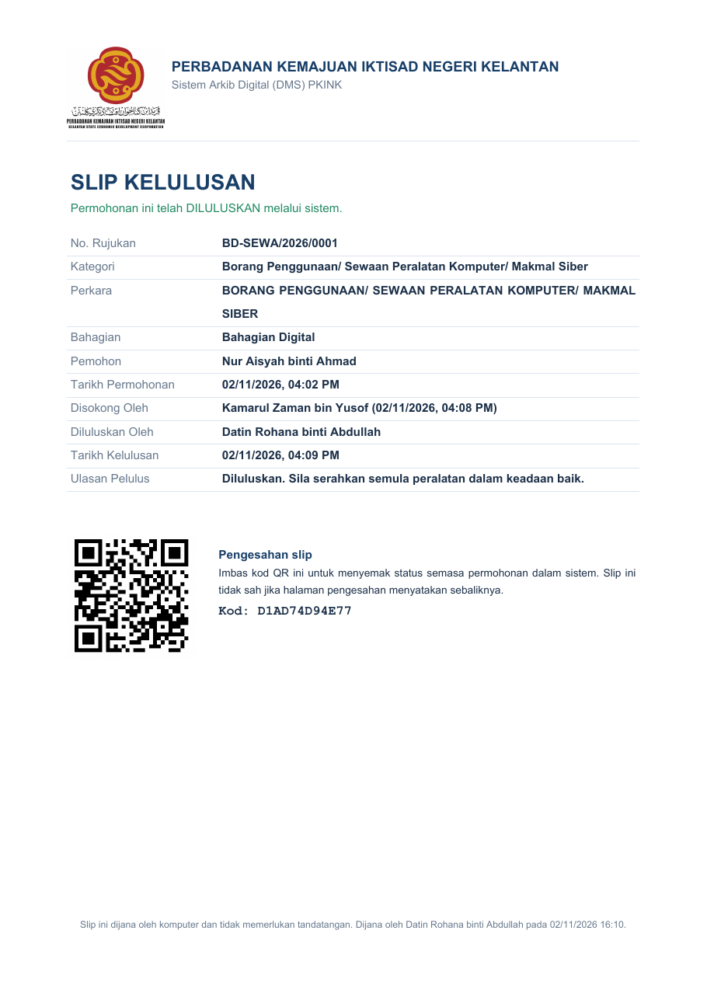
Rajah 5.7: Slip Kelulusan berkod QR
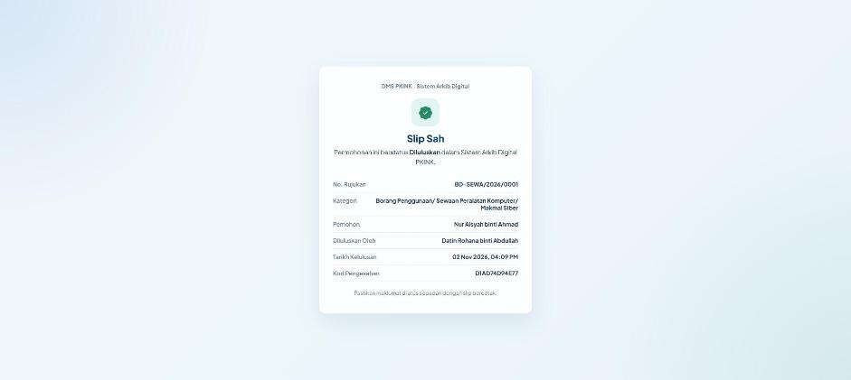
Rajah 5.8: Halaman pengesahan slip selepas kod QR diimbas
5.7 Borang siap
Butang Muat Turun Borang Siap (PDF) menghasilkan borang asal PKINK yang telah diisi dengan nilai dokumen, cop status semasa (Diisi, Dalam Proses, Disokong, Diluluskan atau Ditolak) dan jalur salinan terkawal. Kod QR pengesahan dicetak apabila permohonan diluluskan.
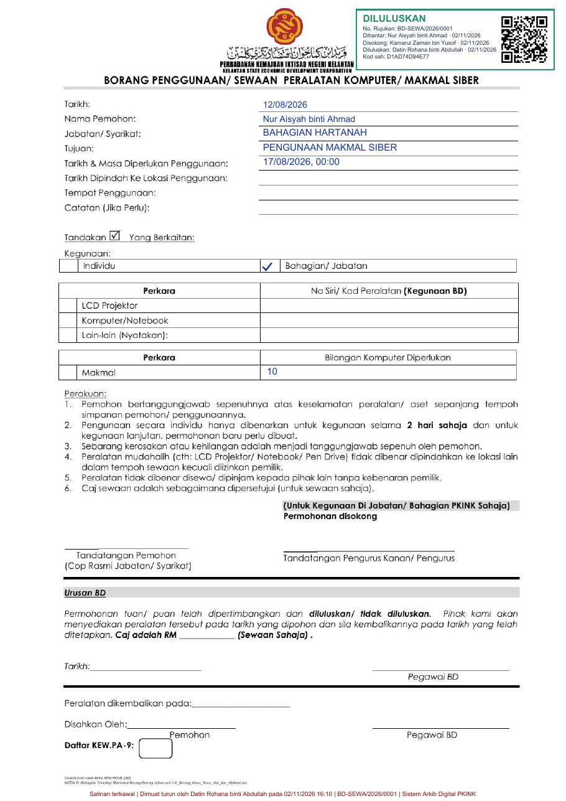
Rajah 5.9: Borang siap dengan cop DILULUSKAN
5.8 Delegasi semasa cuti
Pegawai Penyokong dan Pegawai Pelulus boleh melantik pengganti semasa bercuti melalui menu Delegasi:
Pilih peranan yang hendak diwakilkan dan pegawai pengganti.
Tetapkan tarikh mula dan tarikh tamat (maksimum 180 hari), serta sebab (pilihan).
Klik Simpan Delegasi. Pengganti memegang peranan itu dalam julat tarikh tersebut sahaja, dan setiap tindakannya direkodkan sebagai "bagi pihak" anda.
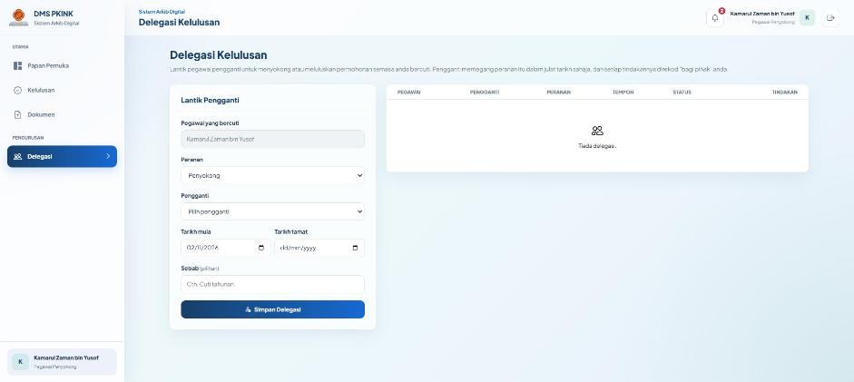
Rajah 5.10: Halaman Delegasi Kelulusan
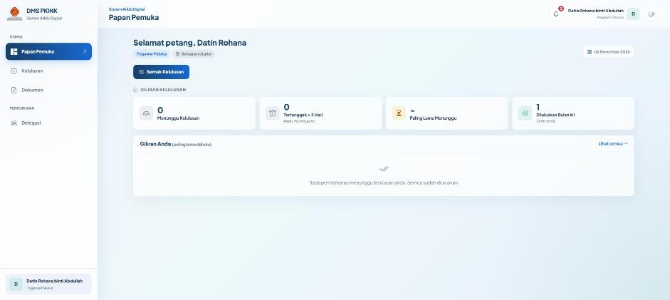
Rajah 5.11: Papan pemuka Pegawai Pelulus
6. Pengurus Bahagian
Pengurus Bahagian boleh melihat dan mengemas kini dokumen bahagiannya, serta mengisi borang seperti kakitangan lain (Bab 3). Papan Pemuka memaparkan ringkasan dokumen bahagian, status kelulusan dan kategori yang paling banyak digunakan.
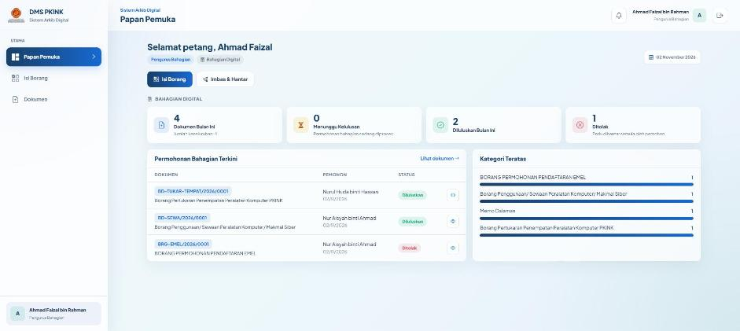
Rajah 6.1: Papan pemuka Pengurus Bahagian
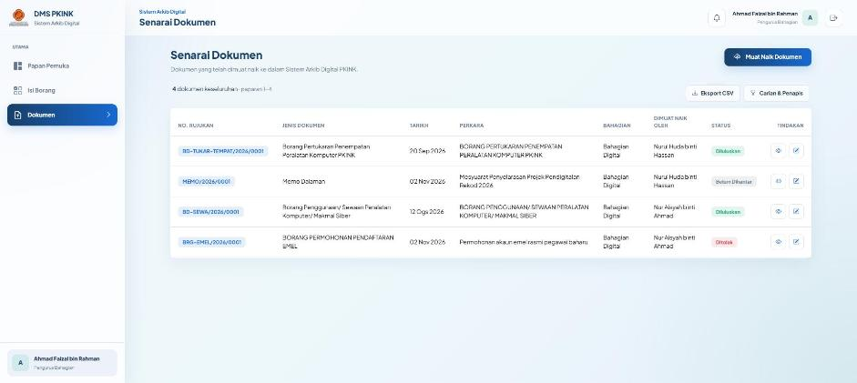
Rajah 6.2: Senarai dokumen bahagian
7. Juruaudit
Juruaudit mempunyai capaian baca sahaja kepada dokumen dan rekod aktiviti sistem.
7.1 Log Audit
Log Audit merekodkan setiap tindakan dalam sistem: siapa, bila, tindakan, jadual dan rekod yang terlibat, alamat IP, serta nilai sebelum dan selepas perubahan. Rekod log tidak boleh diubah.
Klik Tapis Log untuk menapis mengikut pengguna, jadual, tindakan, ID rekod dan julat tarikh.
Klik ikon pada lajur Butiran untuk melihat perubahan terperinci.
Klik Eksport CSV untuk memuat turun log yang ditapis.
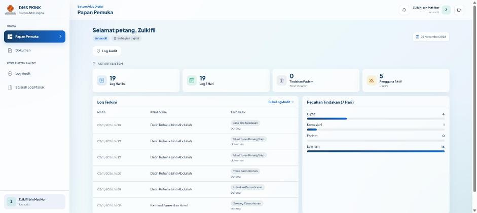
Rajah 7.1: Papan pemuka Juruaudit
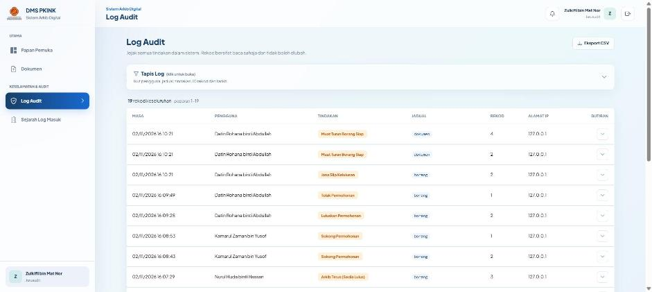
Rajah 7.2: Halaman Log Audit
7.2 Sejarah Log Masuk
Halaman ini memaparkan setiap cubaan log masuk, berjaya atau gagal, beserta alamat IP dan pelayar. Gunakan penapis untuk menyemak aktiviti pengguna tertentu atau cubaan yang mencurigakan.
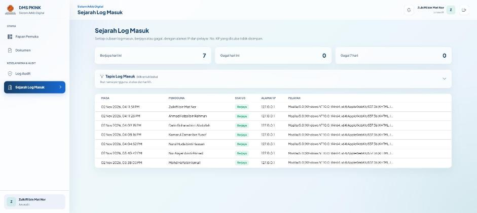
Rajah 7.3: Sejarah Log Masuk
8. Pentadbir Sistem
Bab ini untuk Pentadbir Sistem (ADMIN) dan Super Admin (SUPERADMIN). Pentadbir turut boleh menggunakan semua fungsi dalam Bab 3 hingga Bab 5.
8.1 Papan pemuka pentadbir
Papan Pemuka memaparkan perkara yang memerlukan perhatian (contohnya pendaftaran yang menunggu pengesahan), jumlah dokumen, permohonan aktif, purata masa kelulusan, aliran kelulusan dan dokumen baharu mengikut bulan.
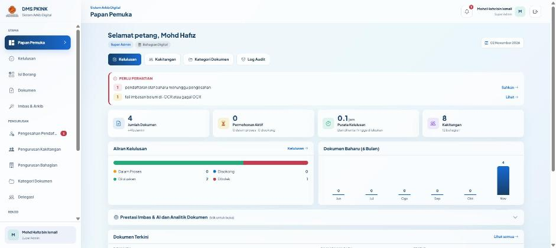
Rajah 8.1: Papan pemuka pentadbir
8.2 Pengesahan pendaftaran
Menu Pengesahan Pendaftaran memaparkan permohonan akaun daripada halaman log masuk.
Klik Lulus dan pilih peranan: akaun dicipta dan kata laluan sementara dihantar melalui emel.
Klik Tolak dan nyatakan sebab: pemohon dimaklumkan melalui emel.
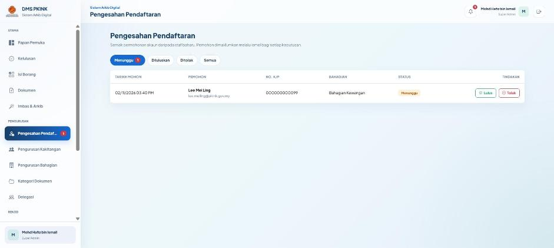
Rajah 8.2: Pengesahan Pendaftaran
8.3 Pengurusan kakitangan
Tambah Kakitangan: isi No. Kad Pengenalan, emel, nama, jawatan, no. telefon, bahagian dan kata laluan sementara (sekurang-kurangnya 8 aksara, huruf dan nombor). Kakitangan wajib menukar kata laluan ini pada log masuk pertama.
Peranan: hanya Super Admin boleh menetapkan peranan. Akaun yang dicipta oleh Pentadbir Sistem menerima peranan Kakitangan.
Edit untuk mengemas kini maklumat atau menetapkan semula kata laluan; Padam untuk menyahaktifkan akaun (boleh dipulihkan melalui Tong Sampah).
Sistem tidak membenarkan Super Admin terakhir dipadam atau kehilangan peranannya.
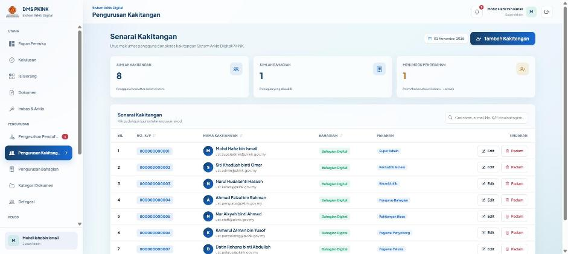
Rajah 8.3: Senarai Kakitangan
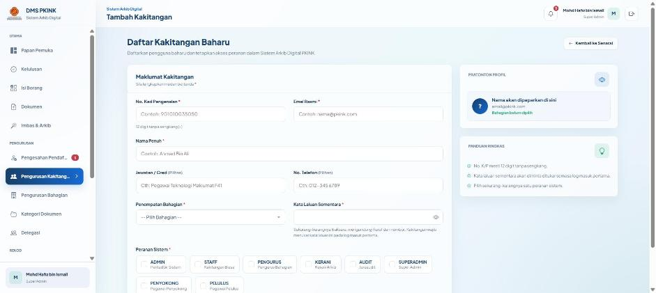
Rajah 8.4: Borang Tambah Kakitangan
8.4 Pengurusan bahagian
Menu Pengurusan Bahagian untuk menambah, mengemas kini dan memadam bahagian. Bahagian yang masih mempunyai kakitangan aktif atau permohonan pendaftaran yang menunggu tidak boleh dipadam.
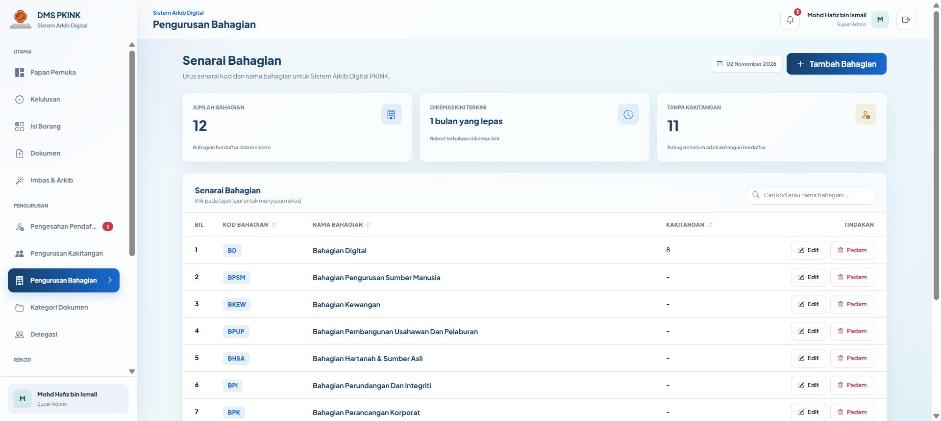
Rajah 8.5: Senarai Bahagian
8.5 Kategori dokumen dan pembina medan
Setiap jenis borang atau dokumen ialah satu kategori. Pentadbir membina medan borang sendiri tanpa perubahan kod:
Isi kod kategori (contohnya BD-SEWA), nama dokumen, kumpulan dan tempoh simpanan.
Dalam Medan Dokumen, klik Tambah Medan bagi setiap medan: nama, kod, jenis data (teks, nombor, wang, tarikh, pilihan, kotak semak, jadual dan lain-lain) dan sama ada medan itu wajib.
Tetapan tambahan bagi setiap medan:
Teks bantuan yang dipaparkan di bawah medan;
Tunjuk hanya jika: medan dipaparkan hanya apabila medan lain mempunyai nilai tertentu;
Isi automatik daripada profil: nama, No. KP, emel, bahagian, jawatan atau telefon pemohon;
bagi tajuk seksyen: tanda diisi oleh pegawai/pejabat supaya seksyen itu tidak wajib bagi pemohon.
Klik Simpan.
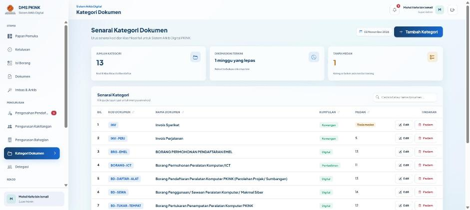
Rajah 8.6: Senarai Kategori Dokumen
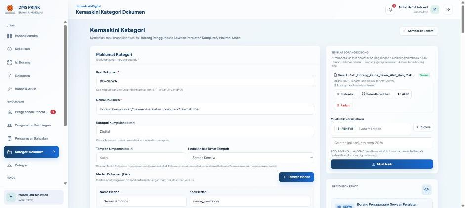
Rajah 8.7: Kemaskini kategori dan panel Templat Borang Kosong
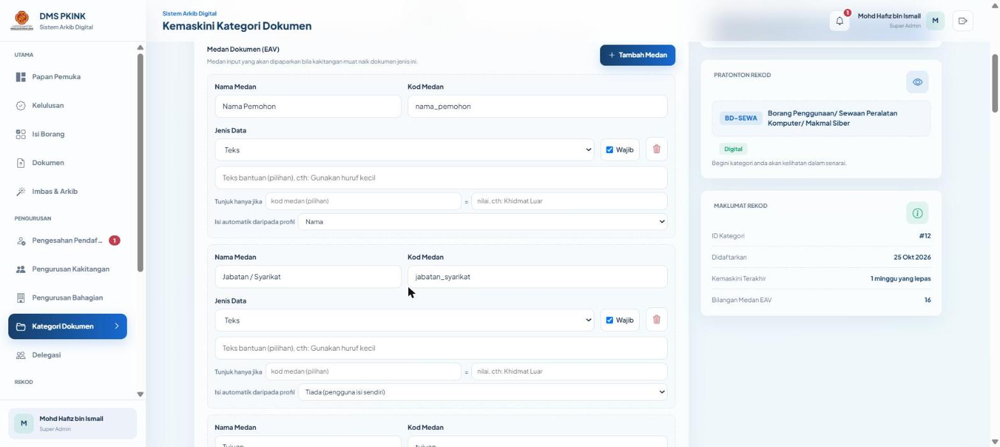
Rajah 8.8: Pembina medan
Menukar jenis data medan yang sudah mempunyai nilai akan memaparkan amaran. Nilai lama tidak dipadam.
8.6 Templat borang kosong
Setiap kategori boleh mempunyai templat borang kosong (borang asal yang belum diisi). Templat membantu AI membezakan teks bercetak dengan tulisan pengisi, mencadangkan kategori yang betul, dan menjana Borang Siap. Selepas memuat naik templat, gunakan Susun Kedudukan untuk meletakkan kotak setiap medan pada borang (butang Cadang Automatik mencadangkan kedudukan awal). Panduan lengkap: Manual Templat Borang (docs/MANUAL_TEMPLAT_BORANG.pdf).
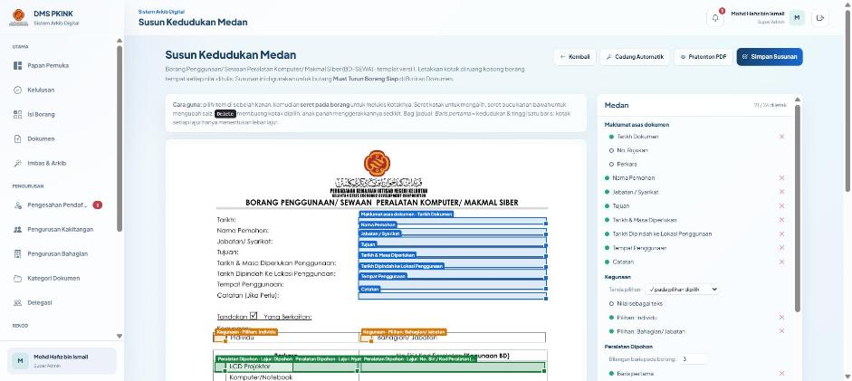
Rajah 8.9: Editor Susun Kedudukan Medan
8.7 Kelulusan (pentadbir)
Pentadbir melihat semua permohonan dalam sistem dengan penapis status (Dalam Proses, Disokong, Diluluskan, Ditolak), dan boleh menyokong atau meluluskan permohonan orang lain.
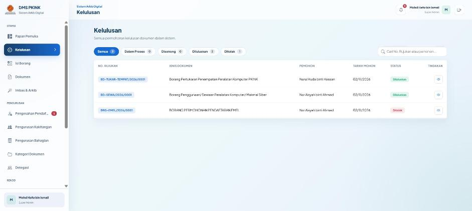
Rajah 8.10: Senarai Kelulusan bagi pentadbir
8.8 Tong Sampah
Dokumen, kategori, bahagian dan kakitangan yang dipadam disenaraikan di sini bersama maklumat siapa yang memadam dan bila. Klik Pulihkan untuk mengembalikan rekod. Sistem tidak memadam rekod secara kekal.
Rajah 8.11: Tong Sampah
8.9 Pelupusan dokumen
Dokumen yang telah tamat tempoh simpanan (mengikut tetapan kategori) disenaraikan dalam tab Tamat Tempoh dan Akan Tamat. Bagi setiap dokumen, pilih Kekalkan (dengan tempoh lanjutan) atau Lupuskan dengan catatan. Dokumen yang dilupuskan dialihkan ke Tong Sampah dan rekodnya dikekalkan untuk jejak audit.
Rajah 8.12: Pelupusan Dokumen
8.10 Status Sistem
Halaman Status Sistem menyemak komponen sistem secara langsung: pangkalan data, OCR (Tesseract, Poppler), AI (Ollama dan model), pekerja latar OCR/AI, notifikasi, penjadual, sandaran, integriti fail imbasan dan ruang cakera. Setiap semakan berstatus Baik, Amaran atau Ralat beserta cadangan tindakan. Sebarang ralat hendaklah dirujuk kepada pentadbir pelayan (Panduan Pemasangan).
Rajah 8.13: Status Sistem
8.11 Pusat Keselamatan
Ringkasan log masuk gagal, log masuk berjaya, rekod dipadam dan fail berbahaya yang ditolak.
Tindakan Kecemasan: log keluar semua sesi, kunci akaun, sekat alamat IP dan mod kecemasan. Gunakan hanya ketika insiden keselamatan, mengikut Pelan Tindak Balas Insiden.
Semakan Pengerasan: senarai semak tetapan keselamatan pelayan dan sistem.
Alamat IP yang mencuba meneka kata laluan disekat secara automatik selama 1 jam, dan pentadbir dimaklumkan.
Rajah 8.14: Pusat Keselamatan
9. Soalan Lazim dan Penyelesaian Masalah
Soalan / masalah
Jawapan / tindakan
Saya terlupa kata laluan.
Gunakan Lupa Kata Laluan? di halaman log masuk (2.4), atau hubungi pentadbir sistem untuk menetapkan kata laluan sementara.
Telefon dengan aplikasi pengesah 2FA hilang.
Log masuk menggunakan salah satu kod pemulihan. Jika kod pemulihan juga tiada, hubungi Bahagian Digital PKINK: pentadbir pelayan boleh menetapkan semula 2FA akaun anda, dan anda perlu mendaftar 2FA semula selepas log masuk.
Akaun saya dikunci.
Tunggu tempoh sekatan tamat atau hubungi pentadbir sistem.
Menu tertentu tidak dipaparkan.
Menu bergantung pada peranan. Jika anda memegang beberapa peranan, tukar peranan aktif melalui nama pengguna di atas kanan. Jika masih tiada, hubungi pentadbir sistem.
Medan yang diisi AI salah atau kosong.
Betulkan secara manual pada skrin semak. Bagi borang bertulisan tangan, cuba Baca semula (tulisan tangan). Pastikan imbasan lurus, jelas dan berwarna atau skala kelabu.
Analisis mengambil masa yang lama.
Analisis biasanya 10 hingga 60 saat. Jika ramai pengguna sedang menganalisis, permohonan anda akan dibariskan dan diproses mengikut giliran.
Muat naik fail ditolak.
Pastikan fail PDF, JPG atau PNG, kurang daripada 10MB dan tidak dilindungi kata laluan. Fail yang dikesan berbahaya oleh antivirus akan ditolak.
Medan "Daripada Profil" salah.
Kemas kini maklumat dalam Profil Saya (nama, jawatan, no. telefon). No. KP dan bahagian hanya boleh diubah oleh pentadbir.
Permohonan tidak dapat disokong atau diluluskan.
Anda tidak boleh bertindak atas permohonan sendiri. Pegawai Penyokong hanya mengendalikan permohonan bahagiannya.
Slip kelulusan dinyatakan "Tidak Sah" semasa diimbas.
Permohonan telah diubah, dipadam atau diluluskan semula selepas slip dicetak. Muat turun slip terkini daripada sistem.
Untuk sebarang masalah lain, hubungi Bahagian Digital PKINK. Jangan sekali-kali berkongsi kata laluan, kod 2FA atau kod pemulihan dengan sesiapa, termasuk orang yang mengaku sebagai kakitangan Bahagian Digital.
10. Glosari
Istilah
Maksud
Aplikasi pengesah
Aplikasi telefon (Google Authenticator atau Microsoft Authenticator) yang menjana kod 6 digit untuk 2FA
Borang siap
Borang asal PKINK dalam PDF yang diisi dengan nilai dokumen dan cop status
Delegasi
Pelantikan pegawai pengganti untuk menyokong atau meluluskan permohonan dalam tempoh tertentu
Imbas & Arkib
Pendigitalan dokumen fizikal yang telah diluluskan; disimpan terus sebagai Diluluskan
Imbas & Hantar
Penghantaran borang kertas yang telah diisi melalui imbasan, untuk melalui aliran kelulusan
Isi Digital
Pengisian borang terus dalam sistem tanpa borang kertas
Kategori dokumen
Jenis borang atau dokumen beserta senarai medannya
Kod pemulihan
Kod sekali guna untuk log masuk jika aplikasi pengesah tidak dapat digunakan
No. Rujukan
Nombor unik dokumen yang dijana secara automatik: KOD/TAHUN/TURUTAN
OCR
Pengecaman aksara optik: pembacaan teks daripada imej imbasan
Pengesahan dua faktor (2FA)
Pengesahan log masuk dengan kata laluan dan kod daripada aplikasi pengesah
Peranan aktif
Peranan yang sedang digunakan oleh pengguna yang memegang lebih daripada satu peranan
Salinan terkawal
Salinan fail yang dimuat turun dengan tera air nama pemuat turun dan tarikh
Templat borang kosong
Salinan borang asal yang belum diisi, digunakan oleh AI dan untuk menjana borang siap
Tong Sampah
Senarai rekod yang dipadam dan boleh dipulihkan
Dokumen ini disediakan untuk kegunaan dalaman Perbadanan Kemajuan Iktisad Negeri Kelantan.